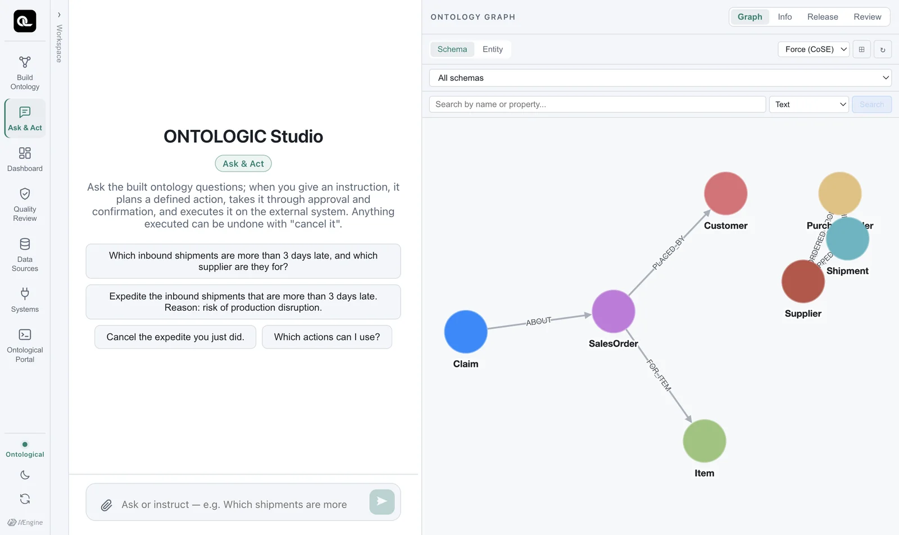
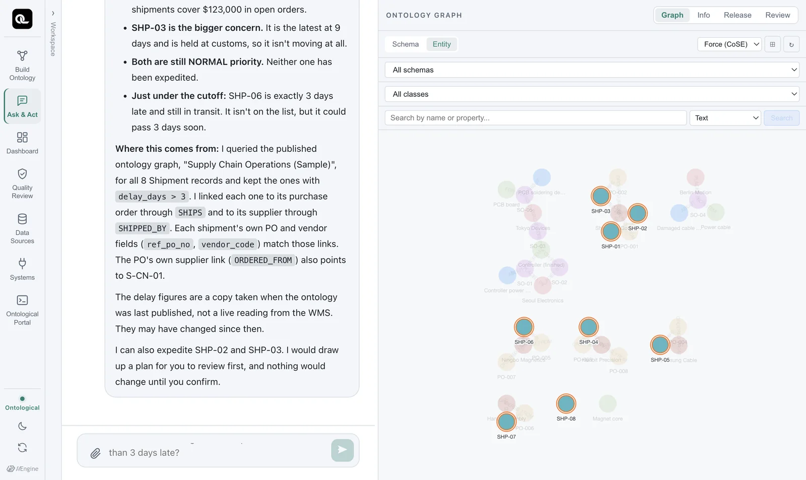

Learn how to ask the ontology questions in plain language in the Ask & Act tab, and how to check the evidence behind each answer. You practice with the sample ontology Supply Chain Operations (Sample).
The Ask & Act tab#
Open the Ask & Act card on the home screen. Example questions are in the middle, and the graph of the published ontology is on the right.

This tab takes both questions and commands. Ask a question and it answers; give a command and it plans an action (commands are covered in Chapter 16). When you only ask questions, nothing changes.
Asking#
Click an example question, or type your own.
Which inbound shipments are more than 3 days late, and which supplier and purchase order are they for?
The agent first reads the schema of the published ontology, then queries the graph with Cypher to build its answer (about 30 seconds in our tests). In the graph on the right, the nodes used in the answer are highlighted.

How to read an answer#
A good answer has three parts.
- Conclusion — “The shipments more than 3 days late are SHP-03 (9 days) and SHP-02 (7 days). Both are for Shenzhen Goldline PCB's purchase orders.”
- Evidence — “Of the 8
Shipmentnodes in the graph, 2 havedelay_days > 3. I found the supplier and purchase orders by following theSHIPPED_BY → SupplierandSHIPS → PurchaseOrderrelationships.” - Limits — “SHP-06 is exactly 3 days late, so I left it out under ‘more than 3 days’. If you count 3 days or more, there are 3.” “I only answered your question; nothing was changed.”
Because the evidence is there, you can double-check the answer. Run the same question as Cypher in the portal and you should get the same result (Chapter 8).
MATCH (sh:Shipment)-[:SHIPS]->(po:PurchaseOrder)-[:ORDERED_FROM]->(s:Supplier)
WHERE sh.delay_days > 3
RETURN sh.shipment_no, sh.delay_days, po.po_id, s.name
The query screen uses the ‘published ontology’
The Ask & Act tab looks at the published ontology in the ontology graph. The sample's instances were read from the sources and loaded on first run, so right after a source changes, the values may differ. The agent says so in its answers too: “These values are a published snapshot and may differ from the current state of the real systems.” Values changed by an action (such as a shipment's priority) are written back to the ontology when the action runs.
Follow-up questions#
If you keep asking in the same conversation, the agent uses the context of what came before.
What other open purchase orders does that supplier have?
Which customer's order did the PCB soldering defect claim come from?
The second question goes through completely different relationships (Claim → SalesOrder → Customer) from the first, yet nothing new has to be designed. The agent just follows relationships that already exist — the power of the “next question” described in Chapter 3.
Managing conversations#
- Expand Workspace in the rail to see past conversations and start a new one.
- Conversations also stay in the Recent list on the home screen. Click one to go straight to it.
- Drag a document in (📎) to attach it to the conversation and ask about it too.
Check yourself
Ask the following in the Ask & Act tab, and double-check the evidence in each answer with Cypher in the portal.
- “What are Shenzhen Goldline PCB's open purchase orders?”
- “Which customer's order did the PCB soldering defect claim come from?”
- “Are there any items with stock below safety stock?” — Do you get an answer to this one? If not, why not?
Show answers
- PO-001 ($82,000) and PO-002 ($41,000). Check:
MATCH (po:PurchaseOrder)-[:ORDERED_FROM]->(s:Supplier {name:'Shenzhen Goldline PCB'}) WHERE po.status = 'OPEN' RETURN po.po_id, po.amount_usd - Tokyo Devices' sales order SO-05 (claim T-3).
- The sample ontology has no class for daily stock (
wms.stock_daily), so the right answer from the agent is “The ontology has no stock information.” When a concept the answer needs is missing, add this question to the build intent and Golden Questions and build again. This is how an ontology grows.